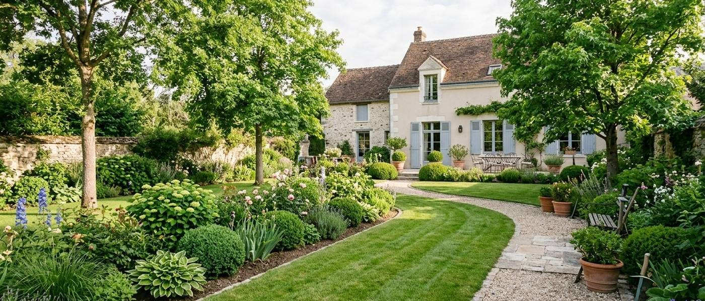
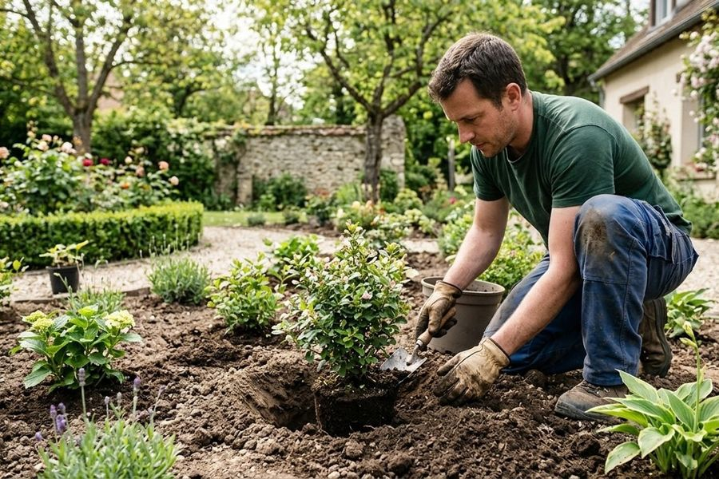
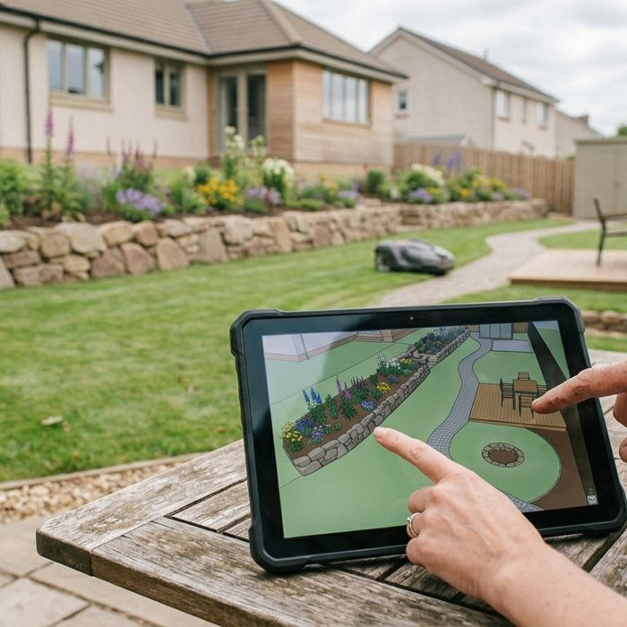
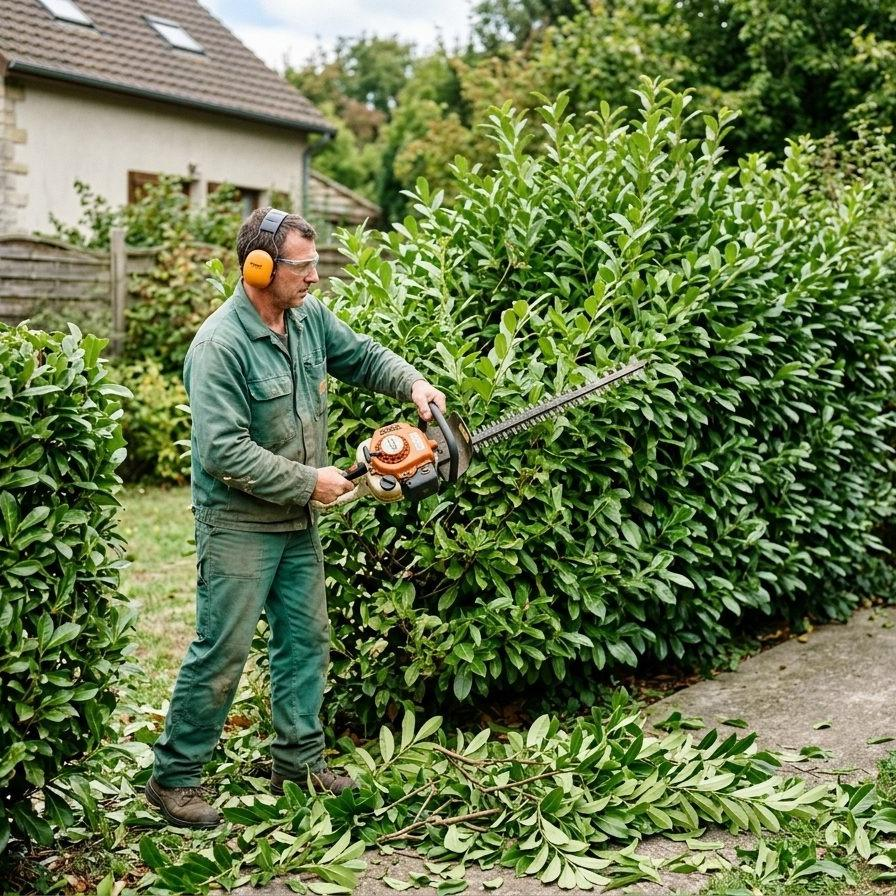

01
Allées et dallages
Pose d’allées et de dallages pour circuler agréablement dans votre jardin.
En savoir plus →Aménagement paysager · Mantes-la-Jolie (78)
Dolino Hoffmann crée, aménage et entretient jardins et espaces verts à Mantes-la-Jolie et dans les environs.

Nos prestations
Des services d’aménagement paysager, de la conception de votre jardin à son entretien.
Pose d’allées et de dallages pour circuler agréablement dans votre jardin.
En savoir plus →
Arbustes, massifs et végétaux installés avec soin, adaptés à votre terrain.
En savoir plus →Aussi : Entretien du jardin Terrasses en bois Maçonnerie paysagère
L’entreprise
Dolino Hoffmann est une entreprise d’aménagement paysager basée à Mantes-la-Jolie, dans les Yvelines (78).
Elle crée, aménage et entretient les espaces verts de la commune et de ses environs.
Dolino Hoffmann, dirigeant

Notre méthode
Chaque projet de jardin suit les mêmes étapes, expliquées avant d’être menées.
Vous décrivez votre jardin et vos attentes.
Nous vous proposons les travaux adaptés à votre terrain.
Les travaux sont menés avec soin.
Un suivi régulier si vous le souhaitez.

Contact
Appelez Dolino Hoffmann ou envoyez votre demande de devis en ligne : nous revenons vers vous.
Mantes-la-Jolie (78)
© Dolino Hoffmann · Mantes-la-Jolie (78) · Maquette de démonstration